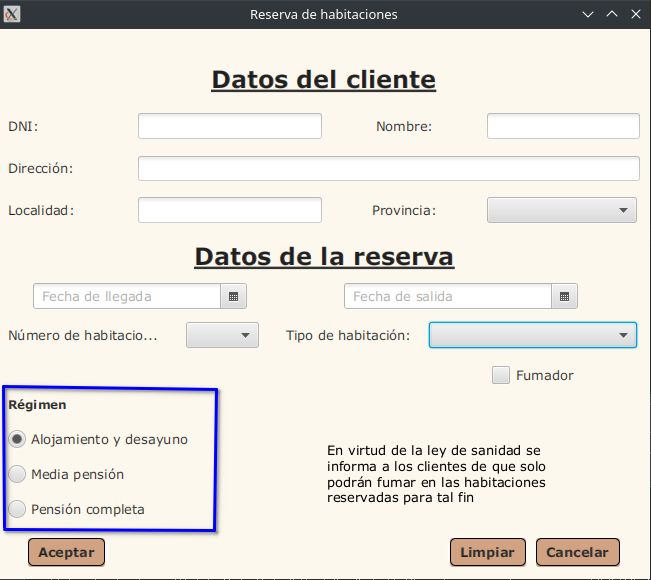

Campo Régimen

Funcionamiento del Campo Régimen:
El Campo Régimen indica el tipo de servicios extra que el cliente quiere tener durante su alquiler.
Tooltip del Campo Régimen:
Cuando se coloca el puntero del ratón sobre el Campo Régimen, aparece un mensaje que pone “Incluirá alojamiento y desayuno” en la primera opción, “Incluirá alojamiento, desayuno y almuerzo” en la segunda opción, y “Incluirá alojamiento, desayuno, almuerzo y cena” en la tercera opción.